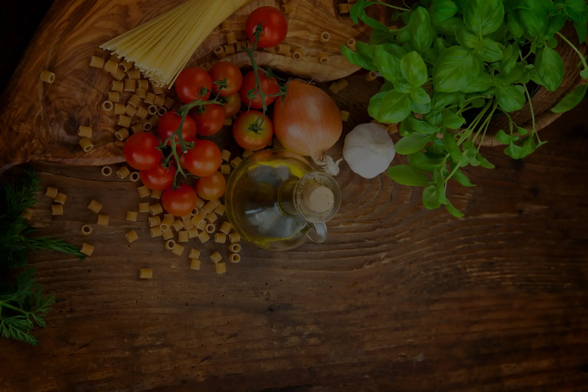
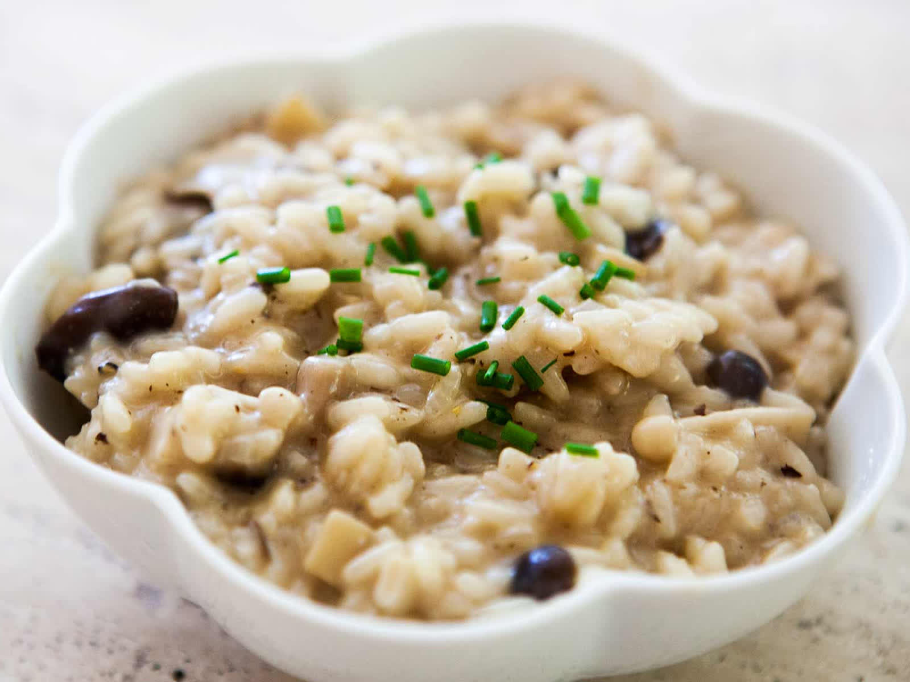
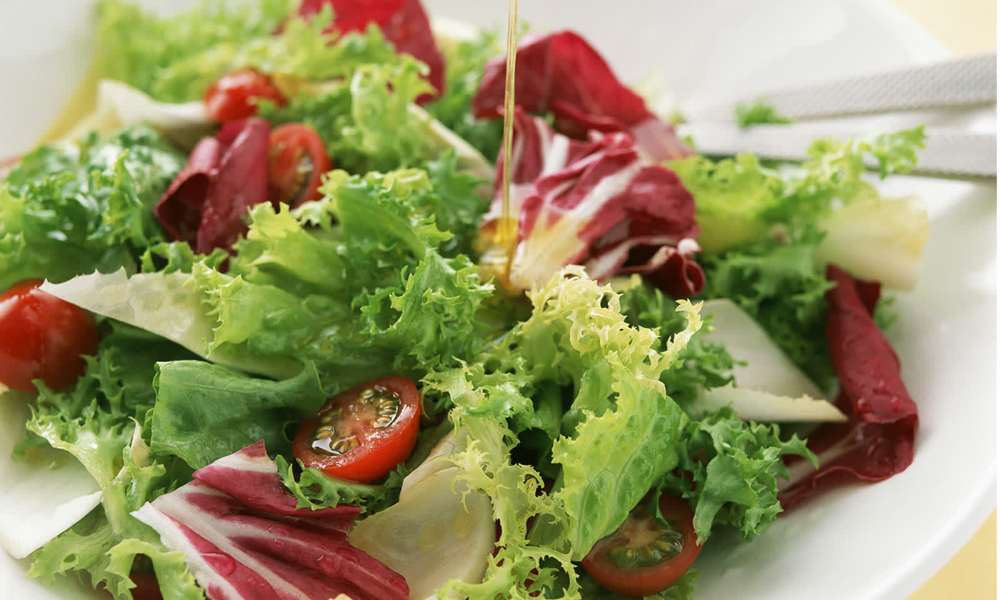
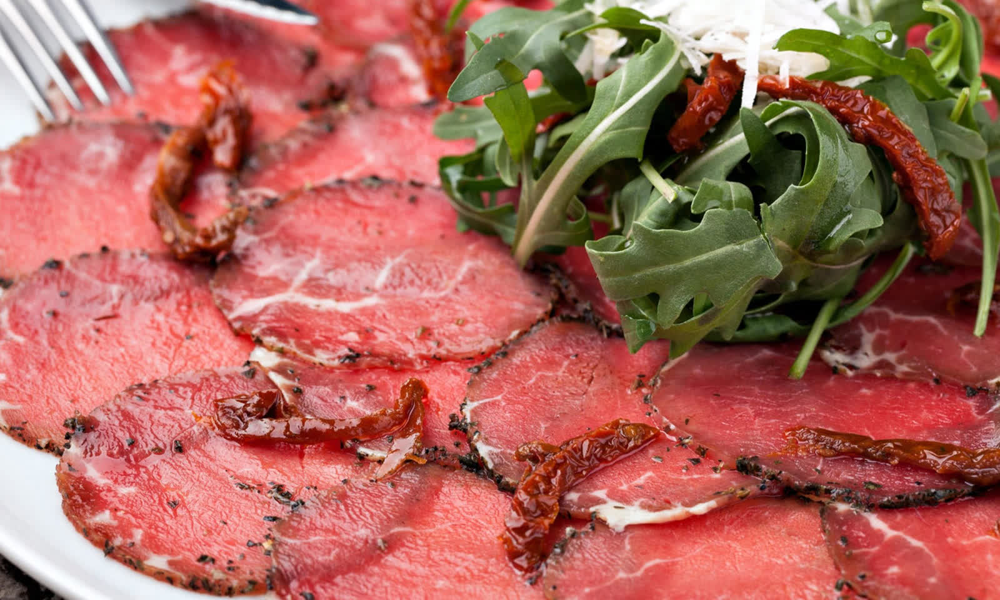

Pasta fresca y seca
Carbonara, Frutti di Mare, Bolognesa, Boscaiola y muchas mas. Pasta fresca rellena: ravioli, tortellini y canelones. Opciones sin gluten disponibles.
Ver la carta
Pasta fresca, pizzas artesanales, risottos, carnes y los mejores ingredientes traidos directamente de Italia. Un rincón de la auténtica trattoria italiana en el corazon de Zaragoza.

Il Principale es un restaurante italiano ubicado en pleno centro de Zaragoza, en la Calle Veronica. Ofrece una carta amplia con lo mejor de la cocina italiana, elaborada con ingredientes de primera calidad importados directamente de Italia.
Vinos italianos, lambruscos y licores selecciónados completan una experiencia gastronómica completa en un ambiente acogedor y familiar.
Una carta completa con los clásicos de la cocina italiana, elaborados con ingredientes autenticos y recetas tradicionales.
Carbonara, Frutti di Mare, Bolognesa, Boscaiola y muchas mas. Pasta fresca rellena: ravioli, tortellini y canelones. Opciones sin gluten disponibles.
Ver la cartaPizzas artesanales con masa fermentada: Quattro Formaggi, Principale, Napolitana, Capricciosa y nuestra exclusiva Pinsa Aragonese.
Ver pizzasRisotto Funghi, Nero, di Pere e Gorgonzola. Carnes selectas como el Stinco, Scaloppine al Marsala y Vitello Tonnato.
Ver carta completaCarpaccio di Vitello, Carpaccio di Salmone, Tomini Gratinati, focaccias artesanales y ensaladas frescas como la Cesare o la Mare e Monti.
Ver entrantesTiramisu casero, Panna Cotta, Cannoli Siciliano, Passione per il Cioccolato y helados artesanales. El broche perfecto para tu comida.
Ver postresDe lunes a viernes, menú completo por 18,90 euros con primer plato, segundo, postre y bebida. Carta renovada cada semana.
Ver menuUna carta extensa con lo mejor de la cocina italiana, utilizando solo los mejores ingredientes de Italia.
Valoración de 4,9 sobre 5 en Google con más de 2.500 opiniones verificadas.
Muy agradables. Comida, servicio y ambiente excelentes.
Todo perfecto. Buena comida, gran servicio y atmósfera acogedora.
Bonito restaurante, ambiente tranquilo y pizzas muy buenas.






| Día | Comidas | Cenas |
|---|---|---|
| Lunes | 13:30 - 16:00 | Cerrado |
| Martes | 13:30 - 16:00 | 20:30 - 23:00 |
| Miércoles | 13:30 - 16:00 | 20:30 - 23:00 |
| Jueves | 13:30 - 16:00 | 20:30 - 23:00 |
| Viernes | 13:30 - 16:00 | 20:30 - 23:30 |
| Sábado | 13:30 - 16:00 | 20:30 - 23:30 |
| Domingo | 13:30 - 16:00 | 20:30 - 23:00 |
Sí. De lunes a viernes ofrecemos un menú del mediodía completo por 18,90 euros (primer plato, segundo, postre y bebida) o medio menú por 13,90 euros (un plato, postre y bebida). La carta del menú cambia cada semana.
Sí. Puedes reservar por teléfono en el 976 20 20 56 o a traves de nuestra pagina de reservas. Disponemos de una sala privada con mesa para 8-12 comensales, ideal para reuniones y celebraciones.
Sí. Disponemos de pasta sin gluten (fettuccini y ravioli) que se puede combinar con diferentes salsas de nuestra carta. Consulta con el personal de sala para más opciones.
Estamos en la Calle Veronica, 1, en pleno centro de Zaragoza (codigo postal 50001), junto al Casco Antiguo. Puedes venir andando facilmente desde la Plaza del Pilar.
Abrimos de martes a domingo en horario de comidas (13:30 a 16:00) y cenas (20:30 a 23:00, viernes y sábados hasta las 23:30). Los lunes solo servicio de comidas (cerrado para cenar).
En pleno centro de Zaragoza, junto al Casco Antiguo. Reserva tu mesa por teléfono o WhatsApp.